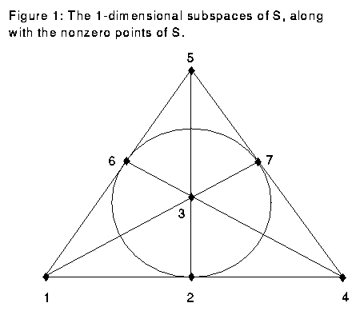
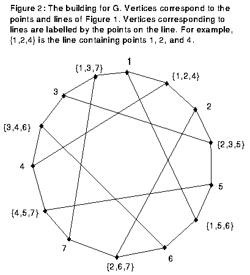
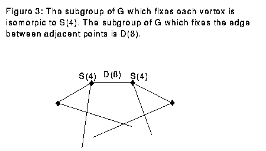

![[HOME]](groups_symmetry_files/home.gif) The Geometry Center Home Page
The Geometry Center Home Page
geometry.college, geometry.research, Sat, 5 Mar 1994
"Group theory is the abstract study of symmetry," says Peter Webb, University of Minnesota and Geometry Center professor. "This is not the way you are first taught to look at groups. Classes usually first teach the definition involving multiplication laws for elements within the group. What could this have to do with symmetry?"
Webb explains that by looking at groups another way, the symmetry becomes clearer. Instead of looking at multiplication structure within the group, look instead at how a group can act on another object. For example, the group of nonsingular n by n matrices with real coefficients acts by matrix multiplication on n-dimensional vectors. In this way, the group actions are all the invertible linear transformations on n-dimensional space.
The study of group actions on a set is a starting point for many different areas of study. Geometers use group actions on geometric objects to find out more information about the structure of the object. In contrast, group theorists, such as Webb, use group actions on a set to study the structure of the group. Often, the actions of the group are symmetries of the object. Thus group theory becomes the study of symmetry.
The advantage of looking at group actions is that the group may be very large, consisting of perhaps thousands of elements. Thus writing down a group multiplication table would be time-consuming and not very illuminating. There is often a much smaller set on which it acts. This means it is easier to see properties of the group by looking at the set on which it acts.
One of the methods that Webb finds useful in his research is to consider the actions of a group on a simplicial complex, the high dimensional version of a graph. Just as a graph consists of points and edges joining points of the graph, a simplicial complex consists of points, edges joining points of the complex, 2-D faces joining edges, 3-D faces joining 2-D faces, and generally a k-D face joining (k-1)-D faces. A solid triangle and a triangulation of a sphere are two-dimensional simplicial complexes. A tetrahedron is a three-dimensional simplicial complex. Webb is particularly interested in a certain simplicial complex which was first constructed for each group by K.S. Brown, and which is built out of the structure of the group itself.
Here is an example of the use of simplicial complexes in group theory. We study the group G, consisting of invertible 3 by 3 matrices with entries in Z/2Z (the unique field of two elements). G has 168 elements, making it unwieldy to write down a multiplication table, though it is small from a group theorist's standpoint.
We could consider the actions of this group on the space S=(Z/2Z)x(Z/2Z)x(Z/2Z), since G permutes the seven nonzero elements in this space. However, we need to look at something related to S but more involved to get results. We look at a particular simplicial complex, in this case a graph, called the "building" for G. To get this, consider the set of 1-dimensional subspaces of S. See Figure 1.

This consists of seven lines through the seven nonzero points of G. From this set of lines, we make the building, a graph with 14 vertices, one for each of the nonzero points and one for each of the lines. We join a vertex representing a point to a vertex representing a line on the graph if the point is on the line. G has the property that an element of G sends each line to another line. Since G permutes points in S while preserving lines, G acts on the building. See Figure 2.

Considering a particular vertex in the building of G, the set of elements in G which leaves that vertex fixed is isomorphic to S(4), the group of permutations of four elements. Likewise, if two adjacent vertices are fixed, the edge between them is fixed. A given edge between adjacent points is fixed by D(8), the dihedral group with eight elements. See Figure 3.

Using this information and a theorem due to Webb, we can get some results on the structure of G. The theorem is quite general; even as it applies to this group, it is too technical to state here. Thus, I only show the following very restricted case; denoting the abelianization of H by H/H', and [H]_2 for the 2-torsion subgroup of H (elements whose order is a power of 2), the theorem says that we have a short exact sequence
0 --> [G/G']_2 --> [S(4)/S(4)']_2 + [S(4)/S(4)']_2 --> [D(8)/D(8)']_2 --> 0
From this we can deduce that [G/G']_2 is the identity (the unique one element group).
The above example demonstrates that by studying the subgroups of a group which fix given parts of a simplicial complex and by considering the geometry of that complex, we are able to gain information about the structure of the group. To see that this is more efficient than writing down a multiplication table, compare of the number of elements in the three groups:
Group Number of Elements G 168 S(4) 24 D(8) 8
Note that G is much bigger than the other two groups. We have reduced the complexity of the problem by using actions of G on a set, instead of looking at multiplication inside of G.
This article is based on an interview with Webb. The reference for Webb's original article is:
P.J. Webb, "A split exact sequence of Mackey functors," Commentarii Mathematici Helvetici, 66(1991), 34-69.
There is also a survey in:
P.J. Webb, "Subgroup complexes," Proceedings of the Symposia in Pure Mathematics, 47(1987), 349-365.
The Geometry Center Home Page
Comments to:
webmaster@www.geom.uiuc.edu
Created: January 3 1995 ---
Last modified: Jun 18 1996